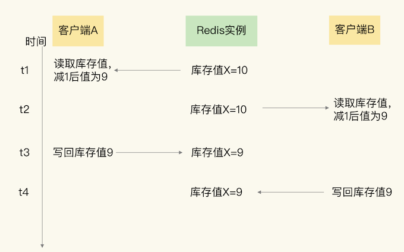
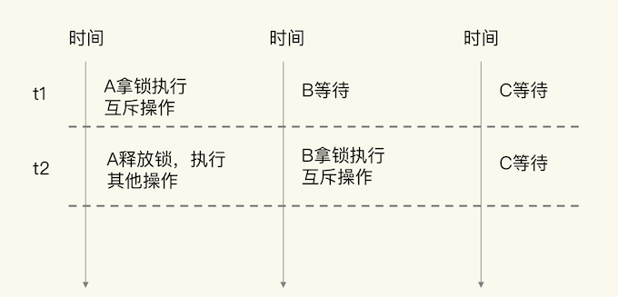

第二节 Redis应对并发访问：无锁的原子操作
Redis 时，不可避免地会遇到并发访问的问题，比如说如果多个用户同时下单，就会对缓存在 Redis 中的商品库存并发更新。
一旦有了并发写操作，数据就会被修改，如果没有对并发写请求做好控制，就可能导致数据被改错，影响到业务的正常使用（例如库存数据错误，导致下单异常）。
为了保证并发访问的正确性，Redis 提供了两种方法，分别是加锁和原子操作。
加锁是一种常用的方法，在读取数据前，客户端需要先获得锁，否则就无法进行操作。当一个客户端获得锁后，就会一直持有这把锁，直到客户端完成数据更新，才释放这把锁。
但是，其实这里会有两个问题：
- 一个是，如果加锁操作多，会降低系统的并发访问性能；
- 第二个是，Redis 客户端要加锁时，需要用到分布式锁，而分布式锁实现复杂，需要用额外的存储系统来提供加解锁操作。
原子操作是另一种提供并发访问控制的方法。原子操作是指执行过程保持原子性的操作，而且原子操作执行时并不需要再加锁，实现了无锁操作。这样一来，既能保证并发控制，还能减少对系统并发性能的影响。
1、并发访问中需要对什么进行控制？
并发访问控制，是指对多个客户端访问操作同一份数据的过程进行控制，以保证任何一个客户端发送的操作在 Redis 实例上执行时具有互斥性。
例如，客户端 A 的访问操作在执行时，客户端 B 的操作不能执行，需要等到 A 的操作结束后，才能执行
并发访问控制对应的操作主要是数据修改操作。当客户端需要修改数据时，基本流程分成两步：
- 客户端先把数据读取到本地，在本地进行修改；
- 客户端修改完数据后，再写回 Redis。
整个流程叫做“读取 - 修改 - 写回”操作（Read-Modify-Write，简称为 RMW 操作）。
当有多个客户端对同一份数据执行 RMW 操作的话，我们就需要让 RMW 操作涉及的代码以原子性方式执行。访问同一份数据的 RMW 操作代码，就叫做临界区代码。
当有多个客户端并发执行临界区代码时，就会存在一些潜在问题
current = GET(id)
current--
SET(id, current)
可以看到，客户端首先会根据商品 id，从 Redis 中读取商品当前的库存值 current（对应 Read)，然后，客户端对库存值减 1（对应 Modify），再把库存值写回 Redis（对应 Write）。
当有多个客户端执行这段代码时，这就是一份临界区代码。
如果我们对临界区代码的执行没有控制机制，就会出现数据更新错误。在刚才的例子中，假设现在有两个客户端 A 和 B，同时执行刚才的临界区代码，就会出现错误

- 客户端 A 在 t1 时读取库存值 10 并扣减 1，
- 在 t2 时，客户端 A 还没有把扣减后的库存值 9 写回 Redis，
- 而在此时，客户端 B 读到库存值 10，也扣减了 1，B 记录的库存值也为 9 了。
- 等到 t3 时，A 往 Redis 写回了库存值 9，而到 t4 时，B 也写回了库存值 9。
如果按正确的逻辑处理，客户端 A 和 B 对库存值各做了一次扣减，库存值应该为 8。所以，这里的库存值明显更新错了
出现这个现象的原因是，临界区代码中的客户端读取数据、更新数据、再写回数据涉及了三个操作，而这三个操作在执行时并不具有互斥性，多个客户端基于相同的初始值进行修改，而不是基于前一个客户端修改后的值再修改。
为了保证数据并发修改的正确性，可以用锁把并行操作变成串行操作，串行操作就具有互斥性。一个客户端持有锁后，其他客户端只能等到锁释放，才能拿锁再进行修改。
LOCK()
current = GET(id)
current--
SET(id, current)
UNLOCK()
虽然加锁保证了互斥性，但是加锁也会导致系统并发性能降低。
如下图所示，
- 当客户端 A 加锁执行操作时，客户端 B、C 就需要等待。
- A 释放锁后，假设 B 拿到锁，那么 C 还需要继续等待，所以，t1 时段内只有 A 能访问共享数据，t2 时段内只有 B 能访问共享数据，系统的并发性能当然就下降了。

和加锁类似，原子操作也能实现并发控制，但是原子操作对系统并发性能的影响较小，
2、Redis 的两种原子操作方法
为了实现并发控制要求的临界区代码互斥执行，Redis 的原子操作采用了两种方法：
- 把多个操作在 Redis 中实现成一个操作，也就是单命令操作；
- 把多个操作写到一个 Lua 脚本中，以原子性方式执行单个 Lua 脚本。
2-1 Redis 本身的单命令操作
Redis 是使用单线程来串行处理客户端的请求操作命令的，所以，当 Redis 执行某个命令操作时，其他命令是无法执行的，这相当于命令操作是互斥执行的。
当然，Redis 的快照生成、AOF 重写这些操作，可以使用后台线程或者是子进程执行，也就是和主线程的操作并行执行。不过，这些操作只是读取数据，不会修改数据，所以，我们并不需要对它们做并发控制。
虽然 Redis 的单个命令操作可以原子性地执行，但是在实际应用中，数据修改时可能包含多个操作，至少包括读数据、数据增减、写回数据三个操作，这显然就不是单个命令操作了，那该怎么办呢？
Redis 提供了 INCR/DECR命令，把这三个操作转变为一个原子操作了。
INCR/DECR 命令可以对数据进行增值 / 减值操作，而且它们本身就是单个命令操作，Redis 在执行它们时，本身就具有互斥性
比如说，在刚才的库存扣减例子中，客户端可以使用下面的代码，直接完成对商品 id 的库存值减 1 操作。即使有多个客户端执行下面的代码，也不用担心出现库存值扣减错误的问题。
DECR id
但是，如果我们要执行的操作不是简单地增减数据，而是有更加复杂的判断逻辑或者是其他操作，那么，Redis 的单命令操作已经无法保证多个操作的互斥执行了。
所以，这个时候，我们需要使用第二个方法，也就是 Lua 脚本。
2-2 Lua 脚本
Redis 会把整个 Lua 脚本作为一个整体执行，在执行的过程中不会被其他命令打断，从而保证了 Lua 脚本中操作的原子性。
如果我们有多个操作要执行，但是又无法用 INCR/DECR 这种命令操作来实现，就可以把这些要执行的操作编写到一个 Lua 脚本中。然后，我们可以使用 Redis 的 EVAL 命令来执行脚本。这样一来，这些操作在执行时就具有了互斥性。
当一个业务应用的访问用户增加时，我们有时需要限制某个客户端在一定时间范围内的访问次数，比如爆款商品的购买限流、社交网络中的每分钟点赞次数限制等。
那该怎么限制呢？我们可以把客户端 IP 作为 key，把客户端的访问次数作为 value，保存到 Redis 中。客户端每访问一次后，我们就用 INCR 增加访问次数。
不过，在这种场景下，客户端限流其实同时包含了对访问次数和时间范围的限制，例如每分钟的访问次数不能超过 20。
- 所以，我们可以在客户端第一次访问时，给对应键值对设置过期时间，例如设置为 60s 后过期。
- 同时，在客户端每次访问时，我们读取客户端当前的访问次数，如果次数超过阈值，就报错，限制客户端再次访问。
下面的这段代码，它实现了对客户端每分钟访问次数不超过 20 次的限制。
//获取ip对应的访问次数
current = GET(ip)
//如果超过访问次数超过20次，则报错
IF current != NULL AND current > 20 THEN
ERROR "exceed 20 accesses per second"
ELSE
//如果访问次数不足20次，增加一次访问计数
value = INCR(ip)
//如果是第一次访问，将键值对的过期时间设置为60s后
IF value == 1 THEN
EXPIRE(ip,60)
END
//执行其他操作
DO THINGS
END
在这个例子中，我们已经使用了 INCR 来原子性地增加计数。但是，客户端限流的逻辑不只有计数，还包括访问次数判断和过期时间设置。
对于这些操作，我们同样需要保证它们的原子性。
否则，如果客户端使用多线程访问，访问次数初始值为 0，第一个线程执行了 INCR(ip) 操作后，第二个线程紧接着也执行了 INCR(ip)，此时，ip 对应的访问次数就被增加到了 2，我们就无法再对这个 ip 设置过期时间了。
这样就会导致，这个 ip 对应的客户端访问次数达到 20 次之后，就无法再进行访问了。即使过了 60s，也不能再继续访问，显然不符合业务要求。
所以，这个例子中的操作无法用 Redis 单个命令来实现，此时，就可以使用 Lua 脚本来保证并发控制。
- 我们可以把访问次数加 1
- 判断访问次数是否为 1
- 以及设置过期时间这三个操作写入一个 Lua 脚本
如下所示：
local current
current = redis.call("incr",KEYS[1])
if tonumber(current) == 1 then
redis.call("expire",KEYS[1],60)
end
编写的脚本名称为lua.script，我们接着就可以使用 Redis 客户端，带上 eval 选项，来执行该脚本。脚本所需的参数将通过以下命令中的 keys 和 args 进行传递。
redis-cli --eval lua.script keys , args
这样一来，访问次数加 1、判断访问次数是否为 1，以及设置过期时间这三个操作就可以原子性地执行了。即使客户端有多个线程同时执行这个脚本，Redis 也会依次串行执行脚本代码，避免了并发操作带来的数据错误。
3、本节小结
在并发访问时，并发的 RMW 操作会导致数据错误，所以需要进行并发控制。所谓并发控制，就是要保证临界区代码的互斥执行。
Redis 提供了两种原子操作的方法来实现并发控制，分别是单命令操作和 Lua 脚本。因为原子操作本身不会对太多的资源限制访问，可以维持较高的系统并发性能。
但是，单命令原子操作的适用范围较小，并不是所有的 RMW 操作都能转变成单命令的原子操作（例如 INCR/DECR 命令只能在读取数据后做原子增减），当我们需要对读取的数据做更多判断，或者是我们对数据的修改不是简单的增减时，单命令操作就不适用了。
而 Redis 的 Lua 脚本可以包含多个操作，这些操作都会以原子性的方式执行，绕开了单命令操作的限制。
不过，如果把很多操作都放在 Lua 脚本中原子执行，会导致 Redis 执行脚本的时间增加，同样也会降低 Redis 的并发性能。所以，我给你一个小建议：在编写 Lua 脚本时，你要避免把不需要做并发控制的操作写入脚本中。
当然，加锁也能实现临界区代码的互斥执行，只是如果有多个客户端加锁时，就需要分布式锁的支持了